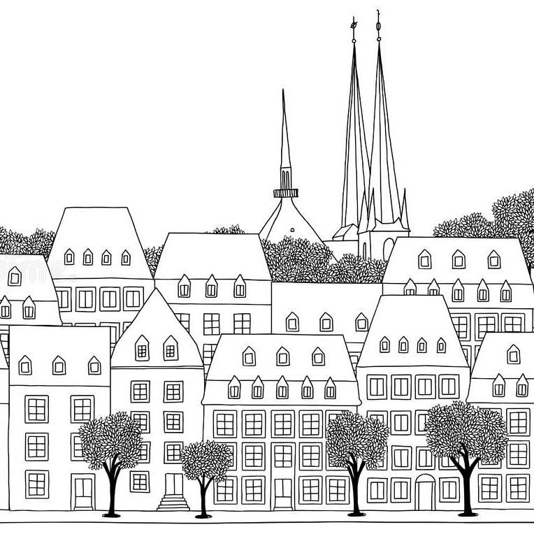
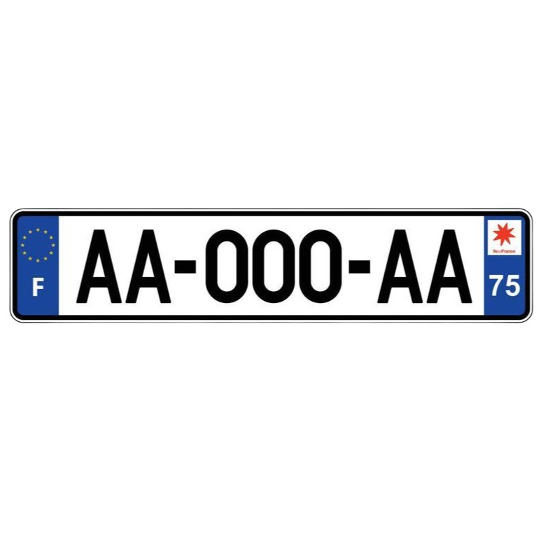

Timeline
A global timeline of my life.
-
2024 - ...
Product Manager
Setting up product processes and launching a product at Araïko (ex Cynapps)
-
2023 - 2024
6 month Data Science internship
End-of-studies internship at Cynapps
-
2022 - 2024
Master in Computer Science
Tertiary education at Université du Québec à Chicoutimi
-

2021 - 2022
6 month internship
Engineer assistant internship at Luxembourg Online
-

2021
Driving license
Obtained the French driving license
-
2019
1 month internship
Worker internship in the port of Dunkirk
-
2018 - 2024
Engineering degree in Computer Science
Tertiary education at Université de Technologie de Belfort-Montbéliard
-

2018
Scientific European Baccalaureate
Obtained with mention "Bien"
-
2008 - 2018
Education in Paris
Primary and secondary education
-

2003 - 2008
Education in New York
Preschool and primary education at LFNY
-
11
OCTOBER
2001